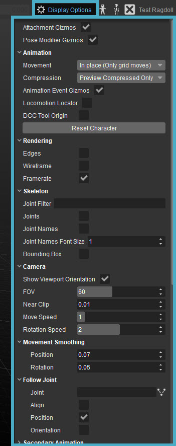

Overview
In the Display Options you can find various options to tweak what is displayed in the Character Tool Viewport.

The Display Options are split up in several separate sections:
Options
| Option | Description |
|---|---|
| Attachment/Pose Modifier Gizmos | Shows/hides the Attachment and Modifier gizmos. |
Animation
| Option | Description |
|---|---|
| Movement |
|
| Compression |
|
| Animation Event Gizmos | Show a helper gizmo for every triggered Animation Event. |
| Locomotion Locator | Show the locomotion locator, as well as the current speed/turn speed/travel direction/slope. The red sphere shows the position, the green arrow shows the orientation, and the yellow arrow the velocity. This option does not appear when displaying Repeated Movement (see above) as there is no motion extraction in that mode. |
| DCC Tool Origin | Show the origin of the source animation asset's scene. |
| Reset Character | Stop all animations and move the character back to the origin of the viewport scene. |
Rendering
| Option | Description |
|---|---|
| Edges | Show edges of the character's geometry. |
| Wireframe | Show wireframe of the character's geometry. |
| Framerate | Show the rendering frame rate in the top-left corner of the Character Tool viewport. |
Skeleton
| Option | Description |
|---|---|
| Joint Filter | Highlight joints of the character's skeleton whose names match or partially match the text entered. |
| Joints | Show joints of the character's skeleton in viewport. |
| Joint Names | Show joint names of the character's skeleton in viewport. |
| Joint Names Font Size | Changes the font size of the joint names. |
| Bounding Box | Show bounding box of the character in viewport. |
Camera
| Option | Description |
|---|---|
| Show Viewport Orientation | Show a gizmo in the bottom-left corner of the viewports describing orientation of the asset. |
| FOV | Field of view of the camera. |
| Near Clip | Near clipping plane of the camera. |
| Move Speed | Movement speed of the camera. |
| Rotation Speed | Rotation speed of the camera. |
Movement Smoothing
| Option | Description |
|---|---|
| Position | Smooth camera movements. A larger value means smoother transition over greater time span. |
| Rotation | Same as Position. Smoother camera rotations. |
Follow Joint
| Option | Description |
|---|---|
| Joint | A skeleton joint for the camera to follow. |
| Align | Align camera with the specified joint. |
| Position | Position camera on the specified joint. |
| Orientation | Keep camera oriented in the same direction as the specified joint. |
Secondary Animation
| Option | Description |
|---|---|
| Dynamic Proxies | Show dynamic proxies used for attachment simulation. |
| Auxiliary Proxies | Show auxiliary proxies used for attachment simulation. |
| Cloth Proxies | Show proxies used for VCloth simulation. |
Physics
| Option | Description |
|---|---|
| Physical Proxies |
|
| Ragdoll Joint Limits |
|
Grid
| Option | Description |
|---|---|
| Show Grid | Show the grid. |
| Main Color | Color of main grid lines. |
| Middle Color | Color of helper grid lines. |
| Spacing | Distance between grid lines. |
| Main Lines | Number of main grid lines. |
| Middle Lines | Number of helper grid lines. |
| Origin | Draw a gizmo of the viewport scene's origin (position 0, 0, 0). Try it with an empty scene or wireframe mode to see the effect. |
Lighting
| Option | Description |
|---|---|
| Cubemap | The cubemap to be used for diffuse and specular image-based lighting. |
| Cubemap Multiplier | Influences the intensity of the indirect light coming from the cubemap. A higher Multiplier value corresponds to a higher intensity. |
| Cubemap Color | Opens a color picker, allowing you to assign a custom color to the cubemap. |
| Rotate Light | Enables rotation of the directional light source. |
| Light Multiplier | Influences the brightness of the directional light. A higher Multiplier value corresponds to a higher brightness. |
| Directional Light Color | Allows you to assign a custom color to the directional light. |
Background
Option | Description |
|---|---|
| Use Gradient | Toggle between a gradient background and an evenly colored one. |
| Top Color | Change the top color of the gradient background. If Use Gradient is unchecked, this will be the only color. |
| Bottom Color | Change the bottom color of the gradient background. |